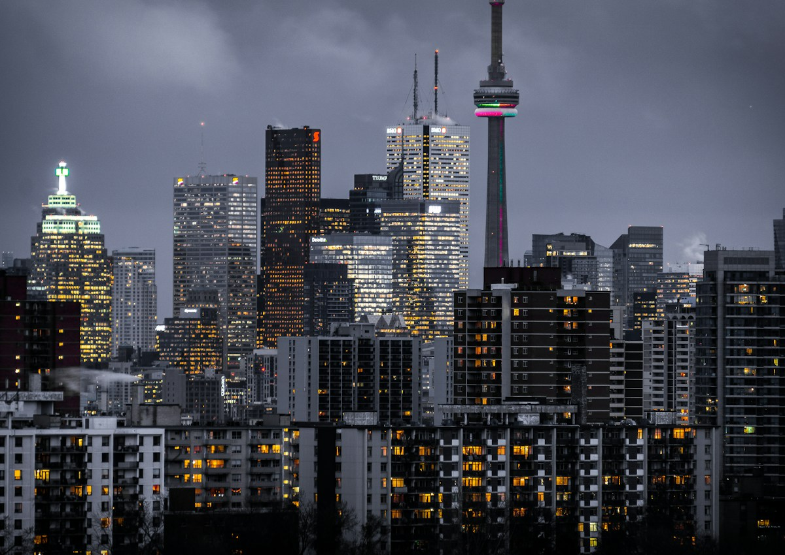
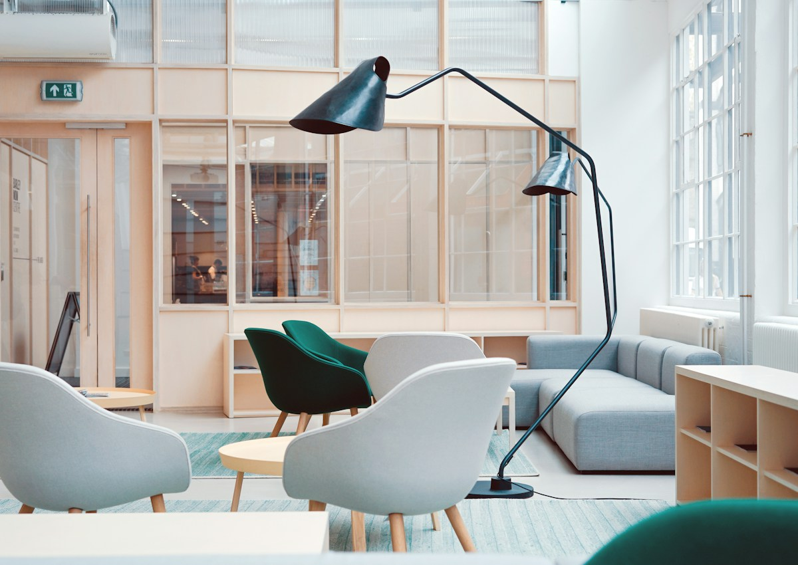
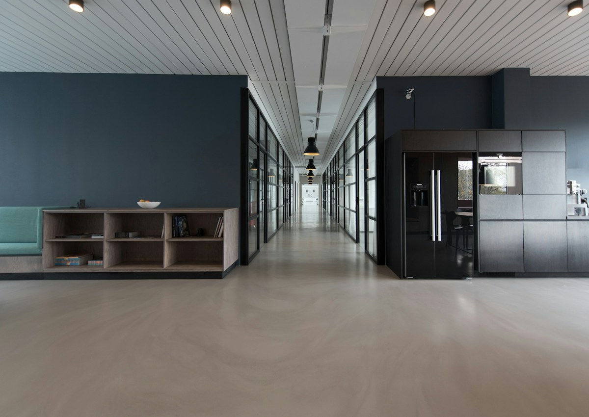

Лендинг, который не выглядит как шаблон
Для premium-сегмента важно не просто перечислить преимущества. Нужно создать ощущение: бренд аккуратный, зрелый, современный и достаточно сильный, чтобы ему можно было доверить выбор.
Premium landing
Лендинг под запуск продукта, услуги или бренда: сильный первый экран, спокойная визуальная система, смысловая структура и понятный путь к заявке.
Первый визуальный слой задаёт тон: свет, пространство, чистота и ощущение бренда.

Страница держится на ритме: крупный визуал, короткий смысл, пауза, следующий аргумент.
Пользователь должен понять ценность без усилий
Мы не заставляем пользователя читать длинный текст. Страница строится из коротких смысловых блоков, которые постепенно объясняют ценность, снимают сомнения и приводят к контакту.
Премиальность создаётся не декором, а точностью
Слишком много эффектов делает страницу дешёвой. В premium-подаче важны аккуратные отступы, сильная типографика, спокойные изображения и уверенный тон коммуникации.

Архитектурные визуалы помогают создать ощущение масштаба, надёжности и спокойной силы.

Lifestyle-кадры делают продукт ближе и помогают представить опыт взаимодействия с брендом.
Что входит в лендинг
Структура страницы, hero-блок, оффер, визуальная система, блоки доверия, текстовые акценты, CTA-сценарии и логика дальнейшего масштабирования.
Лендинг, который продаёт без давления
Страница помогает бренду выглядеть сильнее, объяснять ценность яснее и переводить интерес пользователя в контакт.